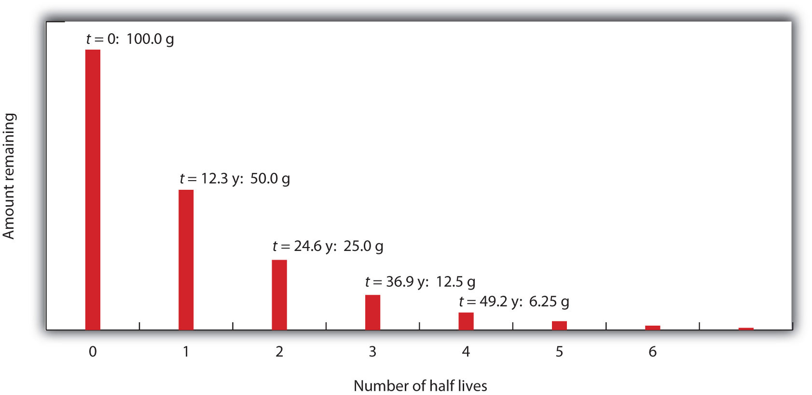

Most of us may not be aware of a device in our homes that guards our safety and, at the same time, depends on radioactivity to operate properly. This device is a smoke detector.
A typical smoke detector contains an electric circuit that includes two metal plates about 1 cm apart. A battery in the circuit creates a voltage between the plates. Next to the plates is a small disk containing a tiny amount (∼0.0002 g) of the radioactive element americium (Am). The radioactivity of the americium ionizes the air between the plates, causing a tiny current to constantly flow between them. (This constant drain on the battery explains why the batteries in smoke detectors should be replaced on a regular basis, whether the alarm has been triggered or not.)
When particles of smoke from a fire enter the smoke detector, they interfere with the ions between the metal plates, interrupting the tiny flow of current. When the current drops beneath a set value, another circuit triggers a loud alarm, warning of the possible presence of fire.
Although radioactive, the americium in a smoke detector is embedded in plastic and is not harmful unless the plastic package is taken apart, which is unlikely. Although many people experience an unfounded fear of radioactivity, smoke detectors provide an application of radioactivity that saves thousands of lives every year.
Most chemists pay little attention to the nucleus of an atom except to consider the number of protons it contains because that determines an element’s identity. However, in nuclear chemistry, the composition of the nucleus and the changes that occur there are very important.
Applications of nuclear chemistry may be more widespread than you realize. Many people are aware of nuclear power plants and nuclear bombs, but nuclear chemistry also has applications ranging from smoke detectors to medicine, from the sterilization of food to the analysis of ancient artifacts. In this chapter, we will examine some of the basic concepts of nuclear chemistry and some of the nuclear reactions that are important in our everyday lives.
We saw in Chapter 2 "Elements, Atoms, and the Periodic Table" that atoms are composed of subatomic particles—protons, neutrons, and electrons. Protons and neutrons are located in the nucleus and provide most of the mass of the atom, while electrons circle the nucleus in shells and subshells and account for an atom’s size.
We also introduced in Chapter 2 "Elements, Atoms, and the Periodic Table" the notation for succinctly representing an isotope of a particular atom:
The element in this example, represented by the symbol C, is carbon. Its atomic number, 6, is the lower left subscript on the symbol and is the number of protons in the atom. The mass number, the superscript to the upper left of the symbol, is the sum of the number of protons and neutrons in the nucleus of this particular isotope. In this case, the mass number is 12, which means that the number of neutrons in the atom is 12 − 6 = 6 (that is, the mass number of the atom minus the number of protons in the nucleus equals the number of neutrons). Occasionally, the atomic number is omitted in this notation because the symbol of the element itself conveys its characteristic atomic number. The two isotopes of hydrogen, 2H and 3H, are given their own names: deuterium (D) and tritium (T), respectively. Another way of expressing a particular isotope is to list the mass number after the element name, like carbon-12 or hydrogen-3.
Atomic theory in the 19th century presumed that nuclei had fixed compositions. But in 1896, the French scientist Henri Becquerel found that a uranium compound placed near a photographic plate made an image on the plate, even if the compound was wrapped in black cloth. He reasoned that the uranium compound was emitting some kind of radiation that passed through the cloth to expose the photographic plate. Further investigations showed that the radiation was a combination of particles and electromagnetic rays, with its ultimate source as the atomic nucleus. These emanations were ultimately called, collectively, radioactivityEmanations of particles and radiation from atomic nuclei..
There are three main forms of radioactive emissions. The first is called an alpha particleA type of radioactive emission that is equivalent to a helium atom nucleus., which is symbolized by the Greek letter α. An alpha particle is composed of two protons and two neutrons, and so is the same as a helium nucleus. (We often use to represent an alpha particle.) It has a 2+ charge. When a radioactive atom emits an alpha particle, the original atom’s atomic number decreases by two (because of the loss of two protons), and its mass number decreases by four (because of the loss of four nuclear particles). We can represent the emission of an alpha particle with a chemical equation—for example, the alpha-particle emission of uranium-235 is as follows:
How do we know that a product of the reaction is ? We use the law of conservation of matter, which says that matter cannot be created or destroyed. This means we must have the same number of protons and neutrons on both sides of the chemical equation. If our uranium nucleus loses 2 protons, there are 90 protons remaining, identifying the element as thorium. Moreover, if we lose 4 nuclear particles of the original 235, there are 231 remaining. Thus, we use subtraction to identify the isotope of the thorium atom—in this case, .
Chemists often use the names parent isotope and daughter isotope to represent the original atom and the product other than the alpha particle. In the previous example, is the parent isotope, and is the daughter isotope. When one element changes into another in this manner, it undergoes radioactive decay.
Write the nuclear equation that represents the radioactive decay of radon-222 by alpha particle emission and identify the daughter isotope.
Solution
Radon has an atomic number of 86, so the parent isotope is represented as We represent the alpha particle as and use subtraction (222 − 4 = 218 and 86 − 2 = 84) to identify the daughter isotope as an isotope of polonium,
Write the nuclear equation that represents the radioactive decay of polonium-209 by alpha particle emission and identify the daughter isotope.
The second major type of radioactive emission is called a beta particleA type of radioactive emission that is equivalent to an electron., symbolized by the Greek letter β. A beta particle is an electron ejected from the nucleus (not from the shells of electrons about the nucleus) and has a 1− charge. We can also represent a beta particle as or β−. The net effect of beta particle emission on a nucleus is that a neutron is converted to a proton. The overall mass number stays the same, but because the number of protons increases by one, the atomic number goes up by one. Carbon-14 decays by emitting a beta particle:
Again, the sum of the atomic numbers is the same on both sides of the equation, as is the sum of the mass numbers. (Note that the electron is assigned an “atomic number” of 1−, equal to its charge.)
The third major type of radioactive emission is not a particle but rather a very energetic form of electromagnetic radiation called gamma raysA type of radioactive emission that is a very energetic form of electromagnetic radiation., symbolized by the Greek letter γ. Gamma rays themselves do not carry an overall electrical charge, but they may knock electrons out of atoms in a sample of matter and make it electrically charged (for which gamma rays are termed ionizing radiation). For example, in the radioactive decay of radon-222, both alpha and gamma radiation are emitted, with the latter having an energy of 8.2 × 10−14 J per nucleus decayed:
This may not seem like much energy, but if 1 mol of radon atoms were to decay, the gamma ray energy would be 49 million kJ!
Write the nuclear equation that represents the radioactive decay of boron-12 by beta particle emission and identify the daughter isotope. A gamma ray is emitted simultaneously with the beta particle.
Solution
The parent isotope is while one of the products is an electron, So that the mass and atomic numbers have the same value on both sides, the mass number of the daughter isotope must be 12, and its atomic number must be 6. The element having an atomic number of 6 is carbon. Thus, the complete nuclear equation is as follows:
The daughter isotope is
Write the nuclear equation that represents the radioactive decay of iodine-131 by beta particle emission and identify the daughter isotope. A gamma ray is emitted simultaneously with the beta particle.
Alpha, beta, and gamma emissions have different abilities to penetrate matter. The relatively large alpha particle is easily stopped by matter (although it may impart a significant amount of energy to the matter it contacts). Beta particles penetrate slightly into matter, perhaps a few centimeters at most. Gamma rays can penetrate deeply into matter and can impart a large amount of energy into the surrounding matter. Table 11.1 "The Three Main Forms of Radioactive Emissions" summarizes the properties of the three main types of radioactive emissions.
Table 11.1 The Three Main Forms of Radioactive Emissions
| Characteristic | Alpha Particles | Beta Particles | Gamma Rays |
|---|---|---|---|
| symbols | α, | β, | γ |
| identity | helium nucleus | electron | electromagnetic radiation |
| charge | 2+ | 1− | none |
| mass number | 4 | 0 | 0 |
| penetrating power | minimal (will not penetrate skin) | short (will penetrate skin and some tissues slightly) | deep (will penetrate tissues deeply) |
Occasionally, an atomic nucleus breaks apart into smaller pieces in a radioactive process called spontaneous fission (or fission)The breaking apart of an atomic nucleus into smaller nuclei.. Typically, the daughter isotopes produced by fission are a varied mix of products, rather than a specific isotope as with alpha and beta particle emission. Often, fission produces excess neutrons that will sometimes be captured by other nuclei, possibly inducing additional radioactive events. Uranium-235 undergoes spontaneous fission to a small extent. One typical reaction is
where is a neutron. As with any nuclear process, the sums of the atomic numbers and the mass numbers must be the same on both sides of the equation. Spontaneous fission is found only in large nuclei. The smallest nucleus that exhibits spontaneous fission is lead-208.
Fission is the radioactive process used in nuclear power plants and one type of nuclear bomb.
What are the major types of radioactivity? Write chemical equations demonstrating each type.
The major types of radioactivity are alpha decay, beta decay, and gamma ray emission; alpha decay with gamma emission: beta decay: (answers will vary)
Define radioactivity.
Give an example of a radioactive isotope.
How many protons and neutrons are in each isotope?
How many protons and neutrons are in each isotope?
Describe an alpha particle. What nucleus is it equivalent to?
Describe a beta particle. What subatomic particle is it equivalent to?
Explain what gamma rays are.
Explain why it is inappropriate to refer to gamma rays as gamma “particles.”
Plutonium has an atomic number of 94. Write the chemical equation for the alpha particle emission of 244Pu. What is the daughter isotope?
Francium has an atomic number of 87. Write the chemical equation for the alpha particle emission of 212Fr. What is the daughter isotope?
Tin has an atomic number of 50. Write the chemical equation for the beta particle emission of 121Sn. What is the daughter isotope?
Technetium has an atomic number of 43. Write the chemical equation for the beta particle emission of 99Tc. What is the daughter isotope?
Energies of gamma rays are typically expressed in units of megaelectron volts (MeV), where 1 MeV = 1.602 × 10−13 J. Using data provided in the text, calculate the energy, in megaelectron volts, of the gamma ray emitted when radon-222 decays.
The gamma ray emitted when oxygen-19 gives off a beta particle is 0.197 MeV. What is its energy in joules? (See Exercise 13 for the definition of a megaelectron volt.)
Which penetrates matter more deeply—alpha particles or beta particles? Suggest ways to protect yourself against both particles.
Which penetrates matter more deeply—alpha particles or gamma rays? Suggest ways to protect yourself against both emissions.
Define nuclear fission.
What general characteristic is typically necessary for a nucleus to undergo spontaneous fission?
Radioactivity is the spontaneous emission of particles and radiation from atomic nuclei.
An alpha particle is a combination of two protons and two neutrons and is equivalent to a helium nucleus.
Gamma rays are high-energy electromagnetic radiation given off in radioactive decay.
the daughter isotope is an atom of uranium.
the daughter isotope is an atom of antimony.
0.512 MeV
Beta particles; shielding of the appropriate thickness can protect against both alpha and beta particles.
Nuclear fission is when large nuclei break down into smaller nuclei.
Whether or not a given isotope is radioactive is a characteristic of that particular isotope. Some isotopes are stable indefinitely, while others are radioactive and decay through a characteristic form of emission. As time passes, less and less of the radioactive isotope will be present, and the level of radioactivity decreases. An interesting and useful aspect of radioactive decay is half-life. The half-lifeThe amount of time it takes for one-half of a radioactive isotope to decay. of a radioactive isotope is the amount of time it takes for one-half of the radioactive isotope to decay. The half-life of a specific radioactive isotope is constant; it is unaffected by conditions and is independent of the initial amount of that isotope.
Consider the following example. Suppose we have 100.0 g of 3H (tritium, a radioactive isotope of hydrogen). It has a half-life of 12.3 y. After 12.3 y, half of the sample will have decayed to 3He by emitting a beta particle, so that only 50.0 g of the original 3H remains. After another 12.3 y—making a total of 24.6 y—another half of the remaining 3H will have decayed, leaving 25.0 g of 3H. After another 12.3 y—now a total of 36.9 y—another half of the remaining 3H will have decayed, leaving 12.5 g of 3H. This sequence of events is illustrated in Figure 11.1 "Radioactive Decay".
Figure 11.1 Radioactive Decay
During each successive half-life, half of the initial amount will radioactively decay.
We can determine the amount of a radioactive isotope remaining after a given number half-lives by using the following expression:
where n is the number of half-lives. This expression works even if the number of half-lives is not a whole number.
The half-life of 20F is 11.0 s. If a sample initially contains 5.00 g of 20F, how much 20F remains after 44.0 s?
Solution
If we compare the time that has passed to the isotope’s half-life, we note that 44.0 s is exactly 4 half-lives, so using the previous equation, n = 4. Substituting and solving results in the following:
Less than one-third of a gram of 20F remains.
The half-life of 44Ti is 60.0 y. A sample initially contains 0.600 g of 44Ti. How much 44Ti remains after 180.0 y?
Half-lives of isotopes range from fractions of a microsecond to billions of years. Table 11.2 "Half-Lives of Various Isotopes" lists the half-lives of some isotopes.
Table 11.2 Half-Lives of Various Isotopes
| Isotope | Half-Life |
|---|---|
| 3H | 12.3 y |
| 14C | 5,730 y |
| 40K | 1.26 × 109 y |
| 51Cr | 27.70 d |
| 90Sr | 29.1 y |
| 131I | 8.04 d |
| 222Rn | 3.823 d |
| 235U | 7.04 × 108 y |
| 238U | 4.47 × 109 y |
| 241Am | 432.7 y |
| 248Bk | 23.7 h |
| 260Sg | 4 ms |
Many people think that the half-life of a radioactive element represents the amount of time an element is radioactive. In fact, it is the time required for half—not all—of the element to decay radioactively. Occasionally, however, the daughter element is also radioactive, so its radioactivity must also be considered.
The expected working life of an ionization-type smoke detector (described in the opening essay) is about 10 years. In that time, americium-241, which has a half-life of about 432 y, loses less than 4% of its radioactivity. A half-life of 432 y may seem long to us, but it is not very long as half-lives go. Uranium-238, the most common isotope of uranium, has a half-life of about 4.5 × 109 y, while thorium-232 has a half-life of 14 × 109 y.
On the other hand, some nuclei have extremely short half-lives, presenting challenges to the scientists who study them. The longest-lived isotope of lawrencium, 262Lr, has a half-life of 3.6 h, while the shortest-lived isotope of lawrencium, 252Lr, has a half-life of 0.36 s. As of this writing, the largest atom ever detected has atomic number 118, mass number 293, and a half-life of 120 ns. Can you imagine how quickly an experiment must be done to determine the properties of elements that exist for so short a time?
Define half-life.
Describe a way to determine the amount of radioactive isotope remaining after a given number of half-lives.
Half-life is the amount of time needed for half of a radioactive material to decay.
take half of the initial amount for each half-life of time elapsed
Do all isotopes have a half-life? Explain.
Which is more radioactive—an isotope with a long half-life or an isotope with a short half-life?
How long does it take for 1.00 g of 103Pd to decay to 0.125 g if its half-life is 17.0 d?
How long does it take for 2.00 g of 94Nb to decay to 0.0625 g if its half-life is 20,000 y?
It took 75 y for 10.0 g of a radioactive isotope to decay to 1.25 g. What is the half-life of this isotope?
It took 49.2 s for 3.000 g of a radioactive isotope to decay to 0.1875 g. What is the half-life of this isotope?
Only radioactive isotopes have half-lives.
51.0 d
25 y
In Section 11.2 "Half-Life", we used mass to indicate the amount of radioactive substance present. This is only one of several units used to express amounts of radiation. Some units describe the number of radioactive events occurring per unit time, while others express the amount of a person’s exposure to radiation.
Perhaps the direct way of reporting radioactivity is the number of radioactive decays per second. One decay per second is called one becquerel (Bq)A unit of radioactivity equal to one decay per second.. Even in a small mass of radioactive material, however, there are many thousands of decays or disintegrations per second. The unit curie (Ci)A unit of radioactivity equal to 3.7 × 1010 decays per second., now defined as 3.7 × 1010 decays per second, was originally defined as the number of decays per second in 1 g of radium. Many radioactive samples have activities that are on the order of microcuries (µCi) or more. Both the becquerel and curie can be used in place of grams to describe quantities of radioactive material. As an example, the amount of americium in an average smoke detector has an activity of 0.9 µCi.
The unit becquerel is named after Henri Becquerel, who discovered radioactivity in 1896. The unit curie is named after Polish scientist Marie Curie, who performed some of the initial investigations into radioactive phenomena in the early 1900s.
A sample of radium has an activity of 16.0 mCi (millicuries). If the half-life of radium is 1,600 y, how long before the sample’s activity is 1.0 mCi?
Solution
The following table shows the activity of the radium sample over multiple half-lives:
| Time in Years | Activity |
|---|---|
| 0 | 16.0 mCi |
| 1,600 | 8.0 mCi |
| 3,200 | 4.0 mCi |
| 4,800 | 2.0 mCi |
| 6,400 | 1.0 mCi |
Over a period of 4 half-lives, the activity of the radium will be halved four times, at which point its activity will be 1.0 mCi. Thus, it takes 4 half-lives, or 4 × 1,600 y = 6,400 y, for the activity to decrease to 1.0 mCi.
A sample of radon has an activity of 60,000 Bq. If the half-life of radon is 15 h, how long before the sample’s activity is 3,750 Bq?
Other measures of radioactivity are based on the effects it has on living tissue. Radioactivity can transfer energy to tissues in two ways: through the kinetic energy of the particles hitting the tissue and through the electromagnetic energy of the gamma rays being absorbed by the tissue. Either way, the transferred energy—like thermal energy from boiling water—can damage the tissue.
The radA unit of radioactive exposure equal to 0.01 J/g of tissue. (an acronym for radiation absorbed dose) is a unit equivalent to a gram of tissue absorbing 0.01 J:
1 rad = 0.01 J/gAnother unit of radiation absorption is the gray (Gy):
1 Gy = 100 radThe rad is more common. To get an idea of the amount of energy this represents, consider that the absorption of 1 rad by 70,000 g of H2O (approximately the same mass as a 150 lb person) would increase its temperature by only 0.002°C. This may not seem like a lot, but it is enough energy to break about 1 × 1021 molecular C–C bonds in a person’s body. That amount of damage would not be desirable.
Predicting the effects of radiation is complicated by the fact that various tissues are affected differently by different types of emissions. To quantify these effects, the unit remA unit of radioactive exposure that includes a factor to account for the type of radioactivity. (an acronym for roentgen equivalent, man) is defined as
rem = rad × factorwhere factor is a number greater than or equal to 1 that takes into account the type of radioactive emission and sometimes the type of tissue being exposed. For beta particles, the factor equals 1. For alpha particles striking most tissues, the factor is 10, but for eye tissue, the factor is 30. Most radioactive emissions that people are exposed to are on the order of a few dozen millirems (mrem) or less; a medical X ray is about 20 mrem. A sievert (Sv) is a related unit and is defined as 100 rem.
What is a person’s annual exposure to radioactivity and radiation? Table 11.3 "Average Annual Radiation Exposure (Approximate)" lists the sources and annual amounts of radiation exposure. It may surprise you to learn that fully 82% of the radioactivity and radiation exposure we receive is from natural sources—sources we cannot avoid. Fully 10% of the exposure comes from our own bodies—largely from 14C and 40K.
Table 11.3 Average Annual Radiation Exposure (Approximate)
| Source | Amount (mrem) |
|---|---|
| radon gas | 200 |
| medical sources | 53 |
| radioactive atoms in the body naturally | 39 |
| terrestrial sources | 28 |
| cosmic sources | 28 |
| consumer products | 10 |
| nuclear energy | 0.05 |
| Total | 358 |
Flying from New York City to San Francisco adds 5 mrem to your overall radiation exposure because the plane flies above much of the atmosphere, which protects us from most cosmic radiation.
The actual effects of radioactivity and radiation exposure on a person’s health depend on the type of radioactivity, the length of exposure, and the tissues exposed. Table 11.4 "Effects of Short-Term Exposure to Radioactivity and Radiation" lists the potential threats to health at various amounts of exposure over short periods of time (hours or days).
Table 11.4 Effects of Short-Term Exposure to Radioactivity and Radiation
| Exposure (rem) | Effect |
|---|---|
| 1 (over a full year) | no detectable effect |
| ∼20 | increased risk of some cancers |
| ∼100 | damage to bone marrow and other tissues; possible internal bleeding; decrease in white blood cell count |
| 200–300 | visible “burns” on skin, nausea, vomiting, and fatigue |
| >300 | loss of white blood cells; hair loss |
| ∼600 | death |
One of the simplest ways of detecting radioactivity is by using a piece of photographic film embedded in a badge or a pen. On a regular basis, the film is developed and checked for exposure. A comparison of the exposure level of the film with a set of standard exposures indicates the amount of radiation a person was exposed to.
Another means of detecting radioactivity is an electrical device called a Geiger counterAn electrical device that detects radioactivity. (Figure 11.2 "Detecting Radioactivity"). It contains a gas-filled chamber with a thin membrane on one end that allows radiation emitted from radioactive nuclei to enter the chamber and knock electrons off atoms of gas (usually argon). The presence of electrons and positively charged ions causes a small current, which is detected by the Geiger counter and converted to a signal on a meter or, commonly, an audio circuit to produce an audible “click.”
What units are used to quantify radioactivity?
the curie, the becquerel, the rad, the gray, the sievert, and the rem
Define rad.
Define rem.
How does a becquerel differ from a curie?
How is the curie defined?
A sample of radon gas has an activity of 140.0 mCi. If the half-life of radon is 1,500 y, how long before the activity of the sample is 8.75 mCi?
A sample of curium has an activity of 1,600 Bq. If the half-life of curium is 24.0 s, how long before its activity is 25.0 Bq?
If a radioactive sample has an activity of 65 µCi, how many disintegrations per second are occurring?
If a radioactive sample has an activity of 7.55 × 105 Bq, how many disintegrations per second are occurring?
Describe how a radiation exposure in rems is determined.
Which contributes more to the rems of exposure—alpha or beta particles? Why?
Use Table 11.4 "Effects of Short-Term Exposure to Radioactivity and Radiation" to determine which sources of radiation exposure are inescapable and which can be avoided. What percentage of radiation is unavoidable?
What percentage of the approximate annual radiation exposure comes from radioactive atoms that are in the body naturally?
Explain how a film badge works to detect radiation.
Explain how a Geiger counter works to detect radiation.
Known as the radiation absorbed dose, a rad is the absorption of 0.01 J/g of tissue.
A becquerel is smaller and equals 1 decay per second. A curie is 3.7 × 1010 Bq.
6000 y
2.41 × 106 disintegrations per second
The radiation exposure is determined by the number of rads times the quality factor of the radiation.
At least 16% (terrestrial and cosmic sources) of radioactivity is unavoidable; the rest depends on what else a person is exposed to.
A film badge uses film, which is exposed as it is subjected to radiation.
Radioactive isotopes have a variety of applications. Generally, however, they are useful either because we can detect their radioactivity or we can use the energy they release.
Radioactive isotopes are effective tracers because their radioactivity is easy to detect. A tracerA substance that can be used to follow the pathway of that substance through some structure. is a substance that can be used to follow the pathway of that substance through some structure. For instance, leaks in underground water pipes can be discovered by running some tritium-containing water through the pipes and then using a Geiger counter to locate any radioactive tritium subsequently present in the ground around the pipes. (Recall that tritium, 3H, is a radioactive isotope of hydrogen.)
Tracers can also be used to follow the steps of a complex chemical reaction. After incorporating radioactive atoms into reactant molecules, scientists can track where the atoms go by following their radioactivity. One excellent example of this is the use of radioactive carbon-14 to determine the steps involved in the photosynthesis in plants. We know these steps because researchers followed the progress of the radioactive carbon-14 throughout the process.
Radioactive isotopes are useful for establishing the ages of various objects. The half-life of radioactive isotopes is unaffected by any environmental factors, so the isotope acts like an internal clock. For example, if a rock is analyzed and is found to contain a certain amount of uranium-235 and a certain amount of its daughter isotope, we can conclude that a certain fraction of the original uranium-235 has radioactively decayed. If half of the uranium has decayed, then the rock has an age of one half-life of uranium-235, or about 4.5 × 109 y. Many analyses like this, using a wide variety of isotopes, have indicated that the age of Earth itself is over 4 × 109 y. In another interesting example of radioactive dating, 3H dating has been used to verify the stated vintages of some old fine wines.
Carbon-14 (half-life is 5,370 y) is particularly useful in determining the age of once-living artifacts (e.g., animal or plant matter). A tiny amount of carbon-14 is produced naturally in the upper reaches of the atmosphere, and living things incorporate some of it into their tissues, building up to a constant, although very low, level. Once a living thing dies, however, it no longer acquires carbon-14, and as time passes, the carbon-14 that was in the tissues decays. If a once-living artifact is discovered and analyzed many years after its death, with the remaining carbon-14 compared to the known constant level, an approximate age of the artifact can be determined. Using such methods, scientists determined that the age of the Shroud of Turin (made of linen, which comes from the flax plant, and purported by some to be the burial cloth of Jesus Christ; Figure 11.3 "Shroud of Turin") is about 600–700 y, not 2,000 y as claimed by some. Scientists were also able to use radiocarbon dating to show that the age of a mummified body found in the ice of the Alps was 5,300 y.
Figure 11.3 Shroud of Turin

In 1989, several groups of scientists used carbon-14 dating to demonstrate that the age of the Shroud of Turin was only 600–700 y. Many people still cling to a different notion, despite the scientific evidence.
The radiation emitted by some radioactive substances can be used to kill microorganisms on a variety of foodstuffs, which extends the shelf life of these products. Produce such as tomatoes, mushrooms, sprouts, and berries are irradiated with the emissions from cobalt-60 or cesium-137. This exposure kills a lot of the bacteria that cause spoilage, so the produce stays fresh longer. Eggs and some meat, such as beef, pork, and poultry, can also be irradiated. Contrary to the belief of some people, irradiation of food does not make the food itself radioactive.
Radioactive isotopes have numerous medical applications—diagnosing and treating illnesses and diseases. One example of a diagnostic application is using radioactive iodine-131 to test for thyroid activity (Figure 11.4 "Medical Diagnostics"). The thyroid gland in the neck is one of the few places in the body with a significant concentration of iodine. To evaluate thyroid activity, a measured dose of iodine-131 is administered to a patient, and the next day a scanner is used to measure the amount of radioactivity in the thyroid gland. The amount of radioactive iodine that collects there is directly related to the activity of the thyroid, allowing trained physicians to diagnose both hyperthyroidism and hypothyroidism. Iodine-131 has a half-life of only 8 d, so the potential for damage due to exposure is minimal. Technetium-99 can also be used to test thyroid function. Bones, the heart, the brain, the liver, the lungs, and many other organs can be imaged in similar ways by using the appropriate radioactive isotope.
Figure 11.4 Medical Diagnostics

Radioactive iodine can be used to image the thyroid gland for diagnostic purposes.
Source: Scan courtesy of Myo Han, http://en.wikipedia.org/wiki/File:Thyroid_scan.jpg.
Very little radioactive material is needed in these diagnostic techniques because the radiation emitted is so easy to detect. However, therapeutic applications usually require much larger doses because their purpose is to preferentially kill diseased tissues. For example, if a thyroid tumor is detected, a much larger infusion (thousands of rem, as opposed to a diagnostic dose of less then 40 rem) of iodine-131 could help destroy the tumor cells. Similarly, radioactive strontium is used to not only detect but also ease the pain of bone cancers. Table 11.5 "Some Radioactive Isotopes That Have Medical Applications" lists several radioactive isotopes and their medical uses.
Table 11.5 Some Radioactive Isotopes That Have Medical Applications
| Isotope | Use |
|---|---|
| 32P | cancer detection and treatment, especially in eyes and skin |
| 59Fe | anemia diagnosis |
| 60Co | gamma ray irradiation of tumors |
| 99mTc | brain, thyroid, liver, bone marrow, lung, heart, and intestinal scanning; blood volume determination |
| 131I | diagnosis and treatment of thyroid function |
| 133Xe | lung imaging |
| 198Au | liver disease diagnosis |
In addition to the direct application of radioactive isotopes to diseased tissue, the gamma ray emissions of some isotopes can be directed toward the tissue to be destroyed. Cobalt-60 is a useful isotope for this kind of procedure.
One relatively rare form of radioactivity is called positron emission. It is similar to beta particle emission, except that instead of emitting an electron, a nucleus emits a positively charged electron, called a positron. A positron is actually a piece of antimatter; therefore, when a positron encounters an electron, both particles are converted into high-energy gamma radiation.
Isotopes that emit positrons can be employed in a medical imaging technique called positron emission tomography (PET). A patient receives a compound containing a positron-emitting isotope, either intravenously or by ingestion. The radioactive compound travels throughout the body, and the patient is then pushed slowly through a ring of sensors that detect the gamma radiation given off by the annihilation of positrons and electrons. A computer connected to the sensors constructs a three-dimensional image of the interior of part or all of the patient’s body, allowing doctors to see organs or tumors or regulate the function of various organs (such as the brain or the heart) to diagnose the medical condition of the patient.
Two isotopes that undergo positron emission are carbon-11 and fluorine-18, with half-lives of 20.4 and 110 min, respectively. Both isotopes can be incorporated into sugar molecules and introduced into the body. Doctors can use the intensity of gamma ray emission to find tissues that metabolize the sugar faster than other tissues; fast-metabolizing tissue is one sign of a malignant (i.e., cancerous) tumor. Researchers use similar techniques to map areas of the brain that are most active during specific tasks, such as reading or speaking.
PET is one of many diagnostic and treatment methods that physicians use to improve the quality of our lives. It is one of the many positive uses of radioactivity in society.
Describe some of the different ways that amounts of radioactivity are applied in society.
Radioactive isotopes are used in dating, as tracers, and in medicine as diagnostic and treatment tools.
Define tracer is and give an example of how tracers work.
Name two isotopes that have been used as tracers.
Explain how radioactive dating works.
Name an isotope that has been used in radioactive dating.
The current disintegration rate for carbon-14 is 14.0 Bq. A sample of burnt wood discovered in an archaeological excavation is found to have a carbon-14 decay rate of 3.5 Bq. If the half-life of carbon-14 is 5,700 y, approximately how old is the wood sample?
A small asteroid crashes to Earth. After chemical analysis, it is found to contain 1 g of technetium-99 to every 3 g of ruthenium-99, its daughter isotope. If the half-life of technetium-99 is 210,000 y, approximately how old is the asteroid?
What do you think are some of the positive aspects of irradiation of food?
What do you think are some of the negative aspects of irradiation of food?
Describe how iodine-131 is used to both diagnose and treat thyroid problems.
List at least five organs that can be imaged using radioactive isotopes.
Which radioactive emissions can be used therapeutically?
Which isotope is used in therapeutics primarily for its gamma ray emissions?
A tracer follows the path of a chemical or a physical process. One of the uses of a tracer is following the path of water underground (answers will vary).
Radioactive dating works by comparing the amounts of parent and daughter isotopes and calculating back to how long ago all of the material was just the parent isotope.
about 11,400 y
increased shelf life (answers will vary)
Iodine-131 is preferentially absorbed by the thyroid gland and can be used to measure the gland’s activity or destroy bad cells in the gland.
gamma rays, beta particles, or alpha particles
Nuclear changes occur with a simultaneous release of energy. Where does this energy come from? If we could precisely measure the masses of the reactants and the products of a nuclear reaction, we would notice that the amount of mass drops slightly in the conversion from reactants to products. Consider the following nuclear reaction, in which the molar mass of each species is indicated to four decimal places:
If we compare the mass of the reactant (235.0439) to the masses of the products (sum = 234.8605), we notice a mass difference of −0.1834 g, or −0.0001834 kg. Where did this mass go?
According to Albert Einstein’s theory of relativity, energy (E) and mass (m) are related by the following equation:
E = mc2where c is the speed of light, or 3.00 × 108 m/s. In the course of the uranium nuclear chemical reaction, the mass difference is converted to energy, which is given off by the reaction:
E = (−0.0001834 kg)(3.00 × 108 m/s)2 = −1.65 × 1013 J = −1.65 × 1010 kJThat is, 16.5 billion kJ of energy are given off every time 1 mol of uranium-235 undergoes this nuclear reaction. This is an extraordinary amount of energy. Compare it to combustion reactions of hydrocarbons, which give off about 650 kJ/mol of energy for every CH2 unit in the hydrocarbon—on the order of hundreds of kilojoules per mole. Nuclear reactions give off billions of kilojoules per mole.
If this energy could be properly harvested, it would be a significant source of energy for our society. Nuclear energyThe controlled harvesting of energy from fission reactions. involves the controlled harvesting of energy from fission reactions. The reaction can be controlled because the fission of uranium-235 (and a few other isotopes, such as plutonium-239) can be artificially initiated by injecting a neutron into a uranium nucleus. The overall nuclear equation, with energy included as a product, is then as follows:
235U + 1n → 139Ba + 94Kr + 31n + energyThus, by the careful addition of extra neutrons into a sample of uranium, we can control the fission process and obtain energy that can be used for other purposes.
Artificial or induced radioactivity was first demonstrated in 1934 by Irène Joliot-Curie and Frédéric Joliot, the daughter and son-in-law of Marie Curie.
Plutonium-239 can absorb a neutron and undergo a fission reaction to produce an atom of gold-204 and an atom of phosphorus-31. Write the balanced nuclear equation for the process and determine the number of neutrons given off as part of the reaction.
Solution
Using the data given, we can write the following initial equation:
In balanced nuclear equations, the sums of the subscripts on each sides of the equation are the same, as are the sums of the superscripts. The subscripts are already balanced: 0 + 94 = 94 and 79 + 15 = 94. The superscripts on the left equal 240 (1 + 239) but equal 235 (204 + 31) on the right. We need five more mass number units on the right. Five neutrons should be the products of the process for the mass numbers to balance. (Because the atomic number of a neutron is zero, including five neutrons on the right does not change the overall sum of the subscripts.) Thus, the balanced nuclear equation is as follows:
We predict that the overall process will give off five neutrons.
Uranium-238 can absorb a neutron and undergo a fission reaction to produce an atom of cesium-135 and an atom of rubidium-96. Write the balanced nuclear equation for the process and determine the number of neutrons given off as part of the reaction.
A nuclear reactorAn apparatus designed to carefully control the progress of a nuclear reaction and extract the resulting energy for useful purposes. is an apparatus designed to carefully control the progress of a nuclear reaction and extract the resulting energy for useful purposes. Figure 11.5 "A Diagram of a Nuclear Power Plant for Generating Electricity" shows a simplified diagram of a nuclear reactor. The energy from the controlled nuclear reaction converts liquid water into high-pressure steam, which is used to run turbines that generate electricity.
Figure 11.5 A Diagram of a Nuclear Power Plant for Generating Electricity

The two main components of the power plant are the nuclear reactor itself and the steam-driven turbine and electricity generator.
Notice that the fission of uranium produces two more free neutrons than were present to begin with. These neutrons can themselves stimulate other uranium nuclei to undergo fission, releasing yet more energy and even more neutrons, which can in turn induce even more uranium fission. A single neutron can thus begin a process that grows exponentially in a phenomenon called a chain reactionAn exponential growth in a process.:
1 → 2 → 4 → 8 → 16 → 32 → 64 → 128 → 256 → 512 → 1,024 → 2,048 → 4,096 → 8,192 → 16,384 →…Because energy is produced with each fission event, energy is also produced exponentially and in an uncontrolled fashion. The quick production of energy creates an explosion. This is the mechanism behind the atomic bombA weapon that depends on a nuclear chain reaction to generate immense forces..
The first controlled chain reaction was achieved on December 2, 1942, in an experiment supervised by Enrico Fermi in a laboratory underneath the football stadium at the University of Chicago.
Although fairly simple in theory, an atomic bomb is difficult to produce, in part because uranium-235, the isotope that undergoes fission, makes up only 0.7% of natural uranium; the rest is mostly uranium-238, which does not undergo fission. (Remember that the radioactive process that a nucleus undergoes is characteristic of the isotope.) To make uranium useful for nuclear reactors, the uranium in uranium-235 must be enriched to about 3%. Enrichment of uranium is a laborious and costly series of physical and chemical separations. To be useful in an atomic bomb, the uranium in uranium-235 must be enriched to 70% or more. At lesser concentrations, the chain reaction cannot sustain itself, so no explosion is produced.
FusionA nuclear process in which small nuclei are combined into larger nuclei, releasing energy. is another nuclear process that can be used to produce energy. In this process, smaller nuclei are combined to make larger nuclei, with an accompanying release of energy. One example is the hydrogen fusion, which makes helium. While the steps of the process are complicated, the net reaction is:
41H → 4He + 2.58 × 1012 JNotice that the amount of energy given off per mole of reactant is only a fraction of the amount given off by the fission of 1 mol of uranium-235. On a mass (per gram) basis, however, the hydrogen fusion emits many times more energy than fission does. In addition, the product of fission is helium gas, not a wide range of isotopes (some of which are also radioactive) produced by fission.
The practical problem is that to perform fusion, extremely high pressures and temperatures are necessary. Currently, the only known stable systems undergoing fusion are the interiors of stars. The conditions necessary for fusion can be created using an atomic bomb, but the resulting fusion is uncontrollable (and the basis for another type of bomb, a hydrogen bomb). Currently, researchers are looking for safe, controlled ways of producing useful energy using fusion.
Generally speaking, a radiological technician deals with X ray equipment and procedures. A nuclear medicine technologist has similar responsibilities, using compounds containing radioactive isotopes to help diagnose and treat disease.
Nuclear medicine technologists administer the substances containing the radioactive isotope and subsequently operate the apparatus that detects the radiation produced by radioactive decay. The apparatus may be as simple as a piece of photographic film or as complex as a series of computer-controlled electronic detectors. The images obtained by the technologist are interpreted by a specially trained physician.
One of the chief responsibilities of a nuclear medicine technologist is safety. Improper exposure to radioactivity can be harmful to both patient and technologist alike. Therefore, the technologist must adhere to strict safety standards to keep unnecessary exposure as low as possible. The technologist must also know how to dispose of waste materials safely and appropriately.
How is nuclear energy produced?
What is the difference between fission and fusion?
Nuclear energy is produced by carefully controlling the speed of a fission reaction.
In fission, large nuclei break down into small ones; in fusion, small nuclei combine to make larger ones. In both cases, a lot of energy is emitted.
In the spontaneous fission of uranium-233, the following reaction occurs:
233U + 1n → 142Ce + 82Se + 101nFor every mole of 233U that decays, 0.1355 g of mass is lost. How much energy is given off per mole of 233U reacted?
In the spontaneous fission of plutonium-241, the following reaction occurs:
241Pu + 1n → 104Ru + 124Sn + 141nFor every mole of 241Pu that decays, 0.1326 g of mass is lost. How much energy is given off per mole of 241Pu reacted?
The two rarer isotopes of hydrogen—deuterium and tritium—can also be fused to make helium by the following reaction:
2H + 3H → 4He + 1nIn the course of this reaction, 0.01888 g of mass is lost. How much energy is emitted in the reaction of 1 mol of deuterium and tritium?
A process called helium burning is thought to occur inside older stars, forming carbon:
34He → 12CIf the reaction proceeds with 0.00781 g of mass lost on a molar basis, how much energy is given off?
Briefly describe how a nuclear reactor generates electricity.
Briefly describe the difference between how a nuclear reactor works and how a nuclear bomb works.
What is a chain reaction?
Why must uranium be enriched to supply nuclear energy?
1.22 × 1013 J
1.70 × 1012 J
A nuclear reactor generates heat, which is used to generate steam that turns a turbine to generate electricity.
A chain reaction is an ever-expanding series of processes that, if left unchecked, can cause a runaway reaction and possibly an explosion.
To ensure that you understand the material in this chapter, you should review the meanings of the bold terms in the following summary and ask yourself how they relate to the topics in the chapter.
Some atoms have unstable nuclei that emit particles and high-energy electromagnetic radiation to form new elements that are more stable. This emission of particles and electromagnetic radiation is called radioactivity. There are three main types of spontaneous radioactive emission: alpha particles, which are equivalent to helium nuclei; beta particles, which are electrons; and gamma radiation, which is high-energy electromagnetic radiation. Another type of radioactive process is spontaneous fission, in which large nuclei spontaneously break apart into smaller nuclei and, often, neutrons. In all forms of radioactivity, new elements are formed from the radioactive reactants.
Radioactive isotopes decay at different rates. The rate of an isotope’s decay is expressed as a half-life, which is the amount of time required for half of the original material to decay. The length of its half-life is a characteristic of the particular isotope and can range from less than microseconds to billions of years.
Amounts of radioactivity are measured in several different ways. A becquerel is equal to one radioactive decay per second. A curie represents 3.7 × 1010 decays per second. Other units describe the amount of energy absorbed by body tissues. One rad is equivalent to 0.01 joule of energy absorbed per gram of tissue. Different tissues react differently to different types of radioactivity. The rem unit takes into account not only the energy absorbed by the tissues, but also includes a numerical multiplication factor to account for the type of radioactivity and the type of tissue. The average annual radiation exposure of a person is less than 360 millirem, over 80% of which is from natural sources. Radioactivity can be detected using photographic film or other devices such as Geiger counters.
Radioactive isotopes have many useful applications. They can be used as tracers to follow the journey of a substance through a system, like an underground waterway or a metabolic pathway. Radioactive isotopes can be used to date objects, since the amount of parent and daughter isotopes can sometimes be measured very accurately. Radioactive emission can be used to sterilize food for a longer edible lifetime. There are also a number of diagnostic and therapeutic medical applications for radioactive isotopes.
Radioactive processes occur with simultaneous changes in energy. This nuclear energy can be used to generate power for human use. Nuclear reactors use the energy released by fission of large isotopes to generate electricity. When carefully controlled, fission can produce a chain reaction that facilitates the continuous production of energy. If not carefully controlled, a very quick production of energy can result, as in an atomic bomb. Natural uranium does not contain enough of the proper isotope of uranium to work in a nuclear reactor, so it must first be enriched in uranium-235. Forcing small nuclei together to make larger nuclei, a process called fusion, also gives off energy; however, scientists have yet to achieve a controlled fusion process.
Given that many elements are metals, suggest why it would be unsafe to have radioactive materials in contact with acids.
Many alpha-emitting radioactive substances are relatively safe to handle, but inhaling radioactive dust can be very dangerous. Why?
Uranium can be separated from its daughter isotope thorium by dissolving a sample in acid and adding sodium iodide, which precipitates thorium(III) iodide:
Th3+(aq) + 3I−(aq) → ThI3(s)If 0.567 g of Th3+ were dissolved in solution, how many milliliters of 0.500 M NaI(aq) would have to be added to precipitate all the thorium?
Thorium oxide can be dissolved in an acidic solution:
ThO2(s) + 4H+ → Th4+(aq) + 2H2O(ℓ)How many milliliters of 1.55 M HCl(aq) are needed to dissolve 10.65 g of ThO2?
Radioactive strontium is dangerous because it can chemically replace calcium in the human body. The bones are particularly susceptible to radiation damage. Write the nuclear equation for the beta emission of strontium-90.
Write the nuclear equation for the beta emission of iodine-131, the isotope used to diagnose and treat thyroid problems.
A common uranium compound is uranyl nitrate hexahydrate [UO2(NO3)2_6H2O]. What is the formula mass of this compound?
Plutonium forms three oxides: PuO, PuO2, and Pu2O3. What are the formula masses of these three compounds?
A banana contains 600 mg of potassium, 0.0117% of which is radioactive potassium-40. If 1 g of potassium-40 has an activity of 2.626 × 105 Bq, what is the activity of a banana?
Smoke detectors typically contain about 0.25 mg of americium-241 as part of the smoke detection mechanism. If the activity of 1 g of americium-241 is 1.26 × 1011 Bq, what is the activity of americium-241 in the smoke detector?
Uranium hexafluoride (UF6) reacts with water to make uranyl fluoride (UO2F2) and hydrogen fluoride (HF). Balance the following chemical equation:
UF6 + H2O → UO2F2 + HFThe cyclopentadienyl anion (C5H5−) is an organic ion that can make ionic compounds with positive ions of radioactive elements, such as Np3+. Balance the following chemical equation:
NpCl3 + Be(C5H5)2 → Np(C5H5)3 + BeCl2Acids can dissolve metals, making aqueous solutions.
14.7 mL
502 g/mol
about 18 Bq
UF6 + 2H2O → UO2F2 + 4HF